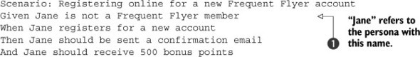
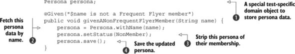
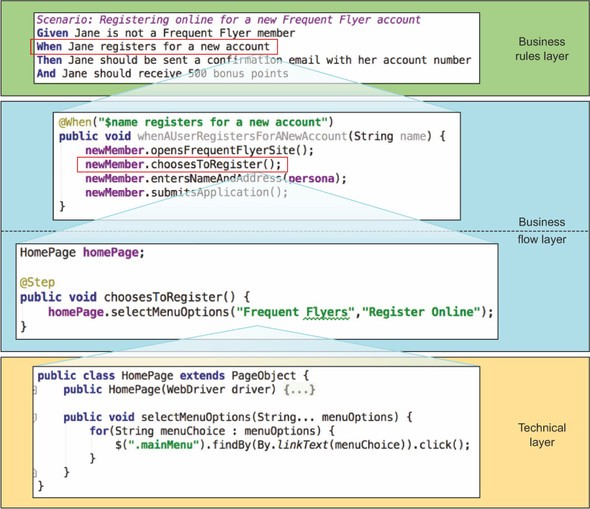

I’ve been researching Behavior Driven Development. This is not a blog post in that it is completely unedited, without links or pictures. Utter contempt for you, my reader. I’m just taking notes but might as well do so publicly.
Write in a declarative style.
Given should focus on things like:
- Who the user is
- What they want to do
- Any configuration a user has set
- Anything they have changed on the application since it was opened
- Any existing data setup (which is expressed in business language, but implemented as DB inserts/updates)
- What screen they are on (if a UI test)
Given should not include things like:
- Clicking on this or that to login or change options
- Other actions a user has taken to set up state
Examples:
Given a user is logged in (or even better, use a persona)
NOT
Given a user goes to /user
And a user logs in as “foo” using password “bar”
And a user goes to the support page
When should focus on:
When should ideally not include:
- What they click on
- Where they navigate to
Note: I find this hard to make happen in real-world scenarios, many UI tests do seem to be based on UI interactions, so not sure always how to make this real.
Examples:
When the user sends a support request containing:
|title|message|email|
|You suck| In every way possible|[email protected] |
NOT
When the user enters “You Suck into the title field (or even worse, into input[name=” title”])
And the user enters message…
And the user clicks on submit…
** Then** should focus on:
- Ensuring value was delivered or errors were caught
- That event happened
Then should not focus on:
- The steps it takes to find the assertion data
- Where the result is (form fields, etc)
- How the application looks, etc.
Examples:
Then the user is shown a confirmation message
NOT
Then the users see a modal popup containing the phrase “Thank you, we received your request”
Use personas
Taken from BDD in Action…


So the persona is defined somewhere in the architecture of the test files (note: this is a challenge in multi-language test implementations). Then Scenarios can be written using this Persona all over. I like this…. The attributes of this persona are then unbound from the tests, but have relevance in testing certain cases.
This can also be overwritten like:
Given Jane is 60 years old
A step def for this, would take the persona we already are using, and change its age to test a given scenario.
Entities
Okay, so this is really the same as personas, but applying to other things. So instead of:
Given there is a product called "rice" with the id 123456 and the price 25.00
OR
When Jane adds the product with id "1233456"
We define Rice as a thing we prepopulate either with our CI or via a hook in our BDD runner. Then we can just refer to it whenever.
Layers of abstraction

- Business Rules Layer: Gherkin is written only in business language. It never contains implementation details.
- Business Flow Layer: The step files call high-level functions of all the things that need to happen. (I want to buy, I want to register, I want to pay, etc)
- Technical API: Those high-level functions then call a facade which interacts with the application (Pay with credit card, AddProduct(xy), Click menu, etc)
- Technical details: This technical facade contains the implementation details (which selectors to click on, which APIs to call, handling async, etc) * this one has things like XPATH selectors in it and HTTP handling
This is important because it adds reusability and robustness to the stack. This is very easily understandable when it is fronting a traditional Page Object Model and browser automation. the POM is level 3 (Techincal API). Level 2 is still usually missing though because traditional steps are still fairly imperative and think in terms of specific manipulations to make on the application, not functional steps that need to be implemented
When to use web/mobile automation vs. other test types
This is the big one I’m reading the book for. Great quote and example here:
Web tests do an excellent job of illustrating how a user interacts with the system via the user interface to achieve a particular business goal. But they don’t need to show every possible path through the system-just the more significant ones. More exhaustive testing can be left to faster-running unit tests.A good rule of thumb is to ask yourself whether you’re illustrating how the user interacts with the application or underlying business logic that’s independent of the user interface. For example, suppose you were testing a user authentication feature. The acceptance criteria might include the following:
The user should receive feedback indicating the strength of the password entered.
- Only strong passwords should be accepted.
- The first acceptance criterion relates to the user’s interaction with the web page, and would need to illustrate how this feedback is provided on the login page. This would be a good candidate for an automated web test.
The second criterion, on the other hand, is about determining what makes a strong password, and what passwords users should be allowed to enter. While this could be done through the user interface by repeatedly submitting different passwords, this would be wasteful. What you’re really checking here is the password-strength algorithm, so an application-code-level test would be more appropriate.
‘’’
What is worth writing scenarios for.
Another big one. It’s important to not say “all new features must have BDD spec files”… Because the reality is that not everything is worth testing to spending time in the 3-amigos conversations about.
I thought this was a no-no given Agile focus on users, but actually, this is a rule worth breaking. As long as the business can understand the Gherkin, anything is fine. Consider this example from BDD in Action:
Feature: Retrieve information about a given flight Scenario: Find flight details by flight number Given I need to know the details of flight number FH-101 When I request the details about this flight Then I should receive the following: | flightNumber | departure | destination | time | | FH-101 | MEL | SYD | 06:00 |
This doesn’t say “A User wants… etc”… And I think it’s still readable, useful and implementable.
More later as I finish the book up….
Originally published at http://www.jacobsingh.name on November 3, 2017.